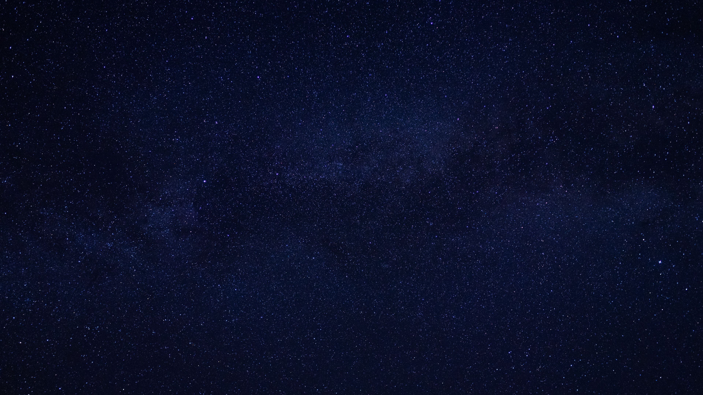

<!DOCTYPE html>
<html lang="en">
<head>
    <meta charset="UTF-8">
    <meta http-equiv="X-UA-Compatible" content="IE=edge">
    <meta name="viewport" content="width=device-width, initial-scale=1.0">
    <link rel="stylesheet" href="AniStyle.css">
    <title>SemPro3 Animation</title>
</head>
<body>
    <!---->
    <!---->
    
    <div class="ocean">
        <svg>
            <filter id="turbulence" x="0" y="0" width="100%" height="100%">
                <feTurbulence id="sea-filter" numOctaves="2" seed="2" baseFrequency="10 20"></feTurbulence>
                <feDisplacementMap scale="9" in="SourceGraphic"></feDisplacementMap>
                <feBlend in="SourceGraphic" in2="NOISE" mode="multiply" result="BLEND">     </feBlend>
                <animate xlink:href="#sea-filter" attributeName="baseFrequency" dur="60s"
                keyTimes="0;0.5;1" values="0.02 0.06;0.04 0.08;0.02 0.06" repeatCount="indefinite"></animate>
            </filter>
        </svg>
    </div>

</body>
</html>